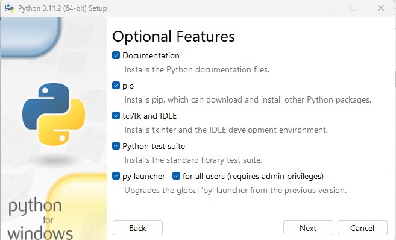

Übung Business Intelligence
Zugang zur Infrastruktur
Beitritt zu einer Übungsgruppe
Bitte suchen Sie sich einen oder zwei Übungspartner und treten mit ihnen gemeinsam einer der leeren bereits in Moodle angelegten Gruppen (BIS2420X) bei:
Anlegen eines Github-Kontos

Wir setzen git als Quellcodeverwaltungssystem für die Übungen ein. Unsere Git-Repositories verwalten wir über Github. Dazu benötigt mindestens ein Mitglied Ihrer Übungsgruppe einen Github-Account.
Gerne können Sie einen vorhanden privaten Github-Account für die Übungen verwenden. Ansonsten legen Sie einfach einen neuen Github-Account mit Ihrer HSH-Mailadresse an:
Github-Organisation HSH-BIS242
Sobald Sie einen Github-Account angelegt haben und dort eingeloggt sind, schreiben Sie bitte eine Mail mit dem Betreff Einladung zu HSH-BIS242, ihrem Git-Benutzernamen oder der registrierten Mailadresse, sowie Ihrer Moodle-Übungsgruppe an
peter.grass@hs-hannover.de:
Sie werden dann der Github-Organisation hinzugefügt und bekommen Zugriff auf ein Übungsrepository.
Installation python
Python (python.org) installieren, wenn es nicht bereits auf dem Rechner installiert ist
checkmark setzen bei "Add python.exe to PATH"

Installation python
Im python installer "customize installation" auswählen und checkmark setzen bei pip, falls nicht bereits gesetzt

Installation python
Falls Python bereits ohne den Paketmanager pip installiert ist, kann pip mithilfe des folgenden Befehls nachinstalliert werden:
py -m ensurepip --upgrade
Installation von Visual Studio Code
Wir empfehlen Visual Studio Code als IDE zur Bearbeitung der Übung zu verwenden. Es kann aber auch jeder andere Texteditor verwendet werden.
Bitte installieren Sie Visual Studio Code, wenn noch nicht vorhanden.
Klonen des Github-Repositorys (1/4)
Testen Sie bitte den Zugriff auf Ihr Github-Übungsrepository. Dazu öffnen Sie Ihr Repository auf Github:
Übersicht der Organisations-Repositories auf Github
Wählen Sie ihr Übungsrepository aus. Sie bekommen dort eine Clone-URL angezeigt. Kopieren Sie diese:

Klonen des Github-Repositorys (2/4)
Nun klonen wir das Github-Repository.
Wir empfehlen Ihnen die Übungen mithilfe der Entwicklungsumgebung Visual Studio Code umzusetzen.
Direkt auf der Willkommensseite finden Sie den Link zum Klonen eines Git-Repositorys.

Klonen des Github-Repositorys (3/4)
Nachdem Sie den Link auf der Willkommensseite angeklickt haben, öffnet sich eine Eingabeaufforderung, in welche Sie die vorher kopierte Clone-URL von Github einfügen. Und mit der Eingabetaste bestätigen.


Sie werden nun gebeten einen Speicherort auszuwählen, in den das Repository geklont wird. Wir empfehlen hierfür einen neuen Unterordner "dev" direkt in Ihrem Benutzerverzeichnis zu erstellen.
Klonen des Github-Repositorys (4/4)
Git fordert Sie auf sich gegenüber Github zu authentifizieren.
Klicken Sie auf "Sign in with your browser". Geben Sie Ihre Github-Zugangsdaten ein und erlauben Sie ggf. den Zugriff auf Ihr Github-Konto.

Sobald Sie dazu aufgefordert werden, schließen Sie das Browserfenster. Betätigen Sie die Schaltfläche "Open" in Visual Studio Code.
Der Editor öffnet nun ihr (noch leeres) lokales Repository und fragt ob Sie den Inhalten in diesem Verzeichnis vertrauen. Bestätigen Sie das.
Erstellen einer Python venv
Visual Studio Code unterstützt Sie bei der Erstellung einer virtuellen Python-Umgebung.
Dafür installieren Sie zunächst die Python Extension in Visual Studio Code.
Nun steht im Visual Studio Kommandofenster (View - Command Palette...) der Befehl "Python: Create Environment..." zur Verfügung.
Wählen Sie erst Venv als Environment Type und anschließend die im vorherigen Schritt installierte Pythoninstallation aus.
Installieren Sie die Dependencies aus der requirements.txt.
Ausführen von dbt
Mit dbt kann nun eine neue Datenbank angelegt und beladen werden:
cd willibald_dwh
dbt build
Zugriff auf die Datenbankdaten
Es gibt einige Datenbankmanagementtools, die auf DuckDb-Datenbanken zugreifen können.
Wir empfehlen Ihnen die Open Source Anwendung DBeaver CE.
Sie können die Datenbankdatei "dev_willibald_dwh.duckdb" einfach damit öffnen. Es gibt keinen Passwortschutz.